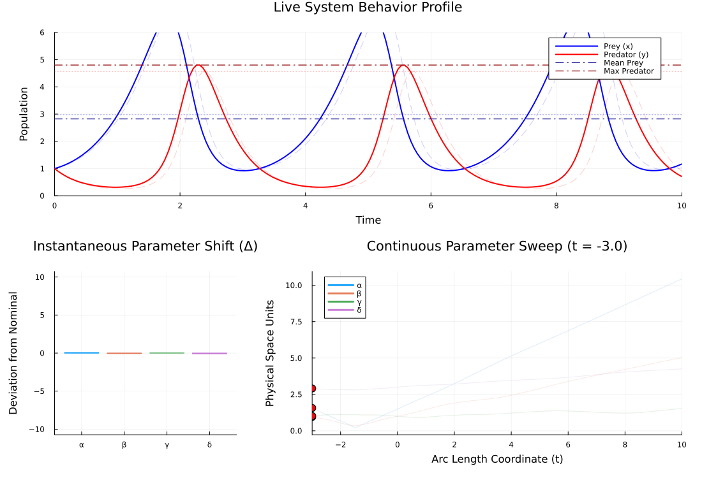

ENV["GKSwstype"] = "100""100"MTK Lotka-Volterra with Optimized Gradients
This example does the same Lotka-Volterra model, but builds it with ModelingToolkit (MTK). MTK allows us to symbolically define our equations and automatically generate efficient, type-stable code.
To ensure our gradients remain allocation-free and fully compatible with ForwardDiff dual numbers, we introduce PreallocationTools and DiffCache. This is the recommended pattern for performance-critical, simulation-based costs.
using ModelingToolkit, Plots
using OrdinaryDiffEq
using ForwardDiff
using PreallocationTools
using SymbolicIndexingInterface
using SymbolicIndexingInterface: parameter_values
using SciMLStructures: Tunable, canonicalize, replace
using SciMLBase, LinearAlgebra
import ModelingToolkit.t_nounits
import ModelingToolkit.D_nounits
import ModelingToolkit: SymbolicT
using Printf
using Statistics
using MinimallyDisruptiveCurvesGlobal Configuration Parameters
const TSPAN_PHYSICAL = (0.0, 10.0) #Time horizon for the differential equations
const EXPLORATION_DIR = 2 #Hessian eigenvector index selected for curve evolution2Model Definition via ModelingToolkit (MTK)
@component function LotkaVolterra(;
name, α = 1.5, β = 1.0, γ = 1.0, δ = 3.0
)
@parameters begin
α = α
β = β
γ = γ
δ = δ
end
params = SymbolicT[]
push!(params, α); push!(params, β); push!(params, γ); push!(params, δ)
@variables begin
x(t_nounits) = 1.0
y(t_nounits) = 1.0
end
vars = SymbolicT[]
push!(vars, x); push!(vars, y)
eqs = Equation[]
push!(eqs, D_nounits(x) ~ α * x - β * x * y)
push!(eqs, D_nounits(y) ~ -δ * y + γ * x * y)
return System(
eqs, t_nounits, vars, params;
systems = System[], name
)
end
@named lv = LotkaVolterra()
sys = complete(lv)
prob = ODEProblem(sys, [], TSPAN_PHYSICAL)
params_to_optimize = tunable_parameters(sys) ∩ parameters(sys)
#Define tracking observables (State arrays)
target_observables = [sys.x, sys.y]2-element Vector{Symbolics.Num}:
x(t)
y(t)Generate Baseline Experimental Features ("Truth")
grid_steps = range(TSPAN_PHYSICAL[1], TSPAN_PHYSICAL[2], length = 200)
sol_nominal = solve(prob, Tsit5(); saveat = grid_steps)
tspan = TSPAN_PHYSICAL
nom_data = sol_nominal(grid_steps, idxs = target_observables)
const nom_features = [
mean(nom_data[1, :]), #Mean Prey (x)
maximum(nom_data[2, :]), #Max Predator (y)
]
solve_at_p(p) = solve(remake(prob; p = p), Tsit5())solve_at_p (generic function with 1 method)High-Performance Loss Function
We use DiffCache to create a buffer that can safely hold dual numbers. The replace function updates the parameter container without breaking MTK's structural typing.
function loss_function(p_active, p_tuple)
#Destructure context tuple
odeprob, ts, features_target, setter, diffcache, obs_symbols = p_tuple
ps = parameter_values(odeprob)
buffer = get_tmp(diffcache, p_active)
#Block-copy baseline values safely
copyto!(buffer, canonicalize(Tunable(), ps)[1])
#Type-safe structural parameter container replacement for ForwardDiff
ps_updated = replace(Tunable(), ps, buffer)
#Mutate only our active dual/float optimization array
setter(ps_updated, p_active)
#Fast inferred problem recreation
newprob = remake(odeprob; p = ps_updated)
sol = solve(newprob, Tsit5(); saveat = ts)
if sol.retcode != SciMLBase.ReturnCode.Success
return eltype(p_active)(1.0e6) #Prevents NaN in Hessian
end
#Track states dynamically without allocations
current_data = sol(ts, idxs = obs_symbols)
#Extract structural feature criteria allocation-free
mean_prey = mean(@view current_data[1, :])
max_predator = maximum(@view current_data[2, :])
return sum(abs2, [mean_prey, max_predator] .- features_target)
endloss_function (generic function with 1 method)Build the MDC context
setter = setp(prob, params_to_optimize)
getter = getp(prob, params_to_optimize)
raw_ps = parameter_values(prob)
tunable_vector_prototype = copy(canonicalize(Tunable(), raw_ps)[1])
x_nominal = getter(prob)
diffcache = DiffCache(tunable_vector_prototype, Val(length(x_nominal)))
#Package context containing all required structural parameters
p_tuple = (prob, grid_steps, nom_features, setter, diffcache, target_observables)
#Wrap into global safe closure for direct evaluation
p_nominal = getter(prob)
f_wrapped = θ -> loss_function(θ, p_tuple)
#Pre-allocate ForwardDiff configuration for non-allocating gradient evaluations
cfg = ForwardDiff.GradientConfig(f_wrapped, p_nominal, ForwardDiff.Chunk(p_nominal))
#Non-allocating, in-place gradient function required by MinimallyDisruptiveCurves
grad_wrapped! = function (g, θ)
return ForwardDiff.gradient!(g, f_wrapped, θ, cfg)
end#9 (generic function with 1 method)MDC Generation Pipeline
println("--- Setting up MTK Lotka-Volterra MDC System ---")
#Compute local curvature Hessian matrix manually
hess0 = ForwardDiff.hessian(f_wrapped, p_nominal)
eigen_decomposition = eigen(Symmetric(hess0))
#Extract selected eigenvector corresponding to initial curve direction
init_dir = eigen_decomposition.vectors[:, EXPLORATION_DIR]
#Extract clean names
param_names = params_to_optimize .|> Symbol
#Pass BOTH the objective and its in-place gradient function into CostFunction
base_cost = CostFunction(f_wrapped, grad_wrapped!)
pipeline = TransformChain()
final_cost = TransformedCost(base_cost, pipeline)
x_nominal_transformed = MinimallyDisruptiveCurves.inverse(pipeline, p_nominal)
hess0_trans = ForwardDiff.hessian(θ -> final_cost(θ), x_nominal_transformed)
eigen_trans = eigen(Symmetric(hess0_trans))
init_dir_trans = eigen_trans.vectors[:, EXPLORATION_DIR]
#Build MDC system
mdc_sys = MDCProblem(
final_cost,
x_nominal_transformed,
init_dir_trans,
10.0;
names = param_names
)
stabiliser = mdc_momentum_readjustment(mdc_sys; tol = 1.0e-3)
my_pipeline = CallbackSet(stabiliser)
println("Launching MDC...")
@time mdc_curves = MDCSolve(mdc_sys, span = MDCSpan(-3.0, 10.0); callback = my_pipeline)Minimally Disruptive Curve (MDCSolution)
====================================
• Parameter Dimensions : 4
• Explored Span : [-3.0 ↔ 10.0] (Arc length)
• Initial Cost (C₀) : 0.0
• Total Energy (H) : 10.0
• Max Parameter Shifts :
α : [1.573 ↔ 10.449]
β : [0.943 ↔ 5.028]
γ : [1.026 ↔ 1.52]
δ : [2.895 ↔ 4.215]
Animation Pipeline Integration
println("\nPreparing continuous manifold animation...")
#Define the live sandbox rendering function
function lotka_volterra_sandbox_painter(θ_physical)
plot_t_grid = range(TSPAN_PHYSICAL[1], TSPAN_PHYSICAL[2], length = 200)
#1. Cleanly update nominal parameters
ps_nom_ctx = copy(raw_ps)
setter(ps_nom_ctx, p_nominal)
prob_nom = remake(prob; p = ps_nom_ctx)
sol_nominal = solve(prob_nom, Tsit5(); saveat = plot_t_grid)
#2. Cleanly update perturbed physical parameters
ps_pert_ctx = copy(raw_ps)
setter(ps_pert_ctx, θ_physical)
prob_pert = remake(prob; p = ps_pert_ctx)
sol_perturbed = solve(prob_pert, Tsit5(); saveat = plot_t_grid)
#3. Extract states
states_nom = sol_nominal(plot_t_grid, idxs = target_observables)
states_pert = sol_perturbed(plot_t_grid, idxs = target_observables)
prey_nominal = states_nom[1, :]
pred_nominal = states_nom[2, :]
prey_perturbed = states_pert[1, :]
pred_perturbed = states_pert[2, :]
mean_prey_nom = mean(prey_nominal)
mean_prey_pert = mean(prey_perturbed)
max_pred_nom = maximum(pred_nominal)
max_pred_pert = maximum(pred_perturbed)
Plots.plot!(
subplot = 1,
plot_t_grid, [prey_nominal pred_nominal],
linealpha = 0.2, linestyle = :dash,
color = [:blue :red], label = false
)
Plots.plot!(
subplot = 1,
plot_t_grid, [prey_perturbed pred_perturbed],
linewidth = 2,
color = [:blue :red], label = ["Prey (x)" "Predator (y)"],
legend = :topright
)
Plots.hline!([mean_prey_nom], subplot = 1, linestyle = :dot, linealpha = 0.4, color = :blue, label = false)
Plots.hline!([max_pred_nom], subplot = 1, linestyle = :dot, linealpha = 0.4, color = :red, label = false)
Plots.hline!([mean_prey_pert], subplot = 1, linestyle = :dashdot, linewidth = 1.2, color = :darkblue, label = "Mean Prey")
Plots.hline!([max_pred_pert], subplot = 1, linestyle = :dashdot, linewidth = 1.2, color = :darkred, label = "Max Predator")
return Plots.plot!(
subplot = 1,
xlabel = "Time", ylabel = "Population",
xlims = TSPAN_PHYSICAL,
ylims = (0.0, 6.0)
)
end
#Invoke updated linear animation tracking utility function
lv_animation = MinimallyDisruptiveCurves.animate_mdc(
mdc_curves,
lotka_volterra_sandbox_painter;
fps = 20,
density = 150,
raw = true
)
output_path = joinpath(pwd(), "lotka_volterra_mtk_mdc.gif")
println("Rendering frames and saving video to: $output_path")
Plots.gif(lv_animation, output_path);
Preparing continuous manifold animation...
Rendering frames and saving video to: /home/runner/work/MinimallyDisruptiveCurves.jl/MinimallyDisruptiveCurves.jl/docs/build/examples/lotka_volterra_mtk_mdc.gif
[ Info: Saved animation to /home/runner/work/MinimallyDisruptiveCurves.jl/MinimallyDisruptiveCurves.jl/docs/build/examples/lotka_volterra_mtk_mdc.gif
This page was generated using Literate.jl.